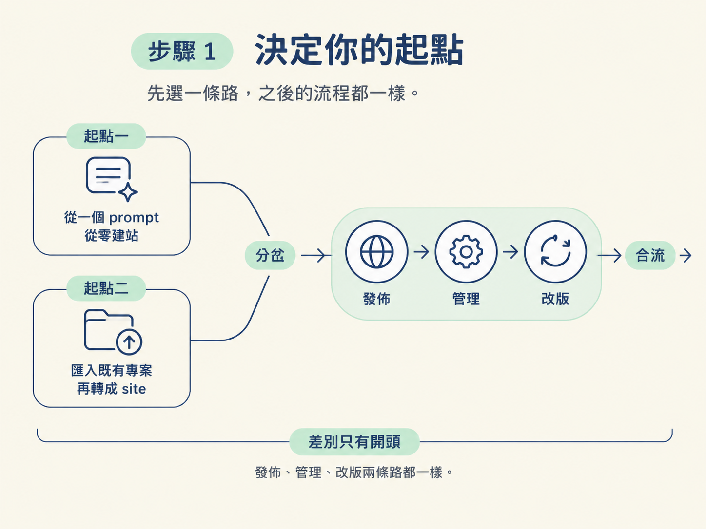
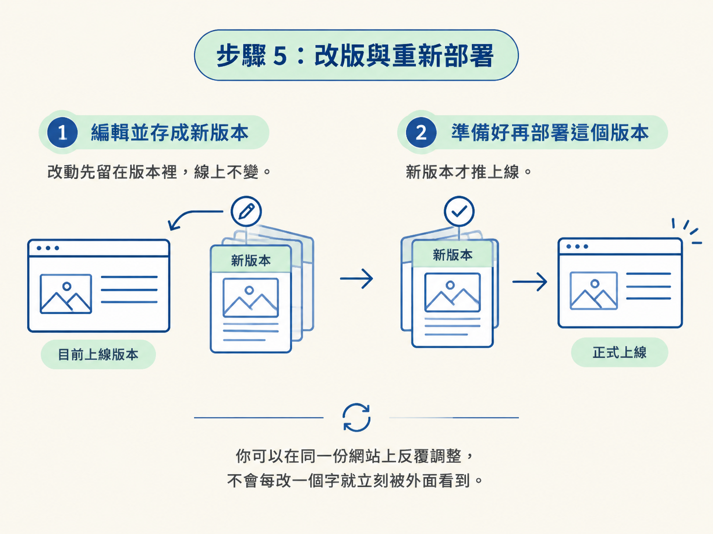

網站寫好了，卡在哪裡？通常是卡在「上線」這一步：要租主機、設定 DNS、弄 TLS 憑證、寫部署腳本，光是把東西推上去就得先當半個 DevOps。這些跟你想做的網站本身一點關係都沒有。
Sites 把這段路收進了 Codex。你要做的事變成：給一個 prompt（或一個現成專案），然後在對話裡把它推上線、改版、再部署。這一課就帶你把這條路走完一次。
走完這一課，你會有三樣東西：一個有網址、別人點得到的網站；它會出現在 Sites 的管理清單裡；之後每一次改版都會留下新的版本，你可以決定哪個版本上線。
動手前只需要兩件事。第一，一個 ChatGPT Plus 等級以上的帳號（發佈的最低門檻）。第二，一個起點：一句想做的 prompt，或者一個你手上已經有的專案。兩條路在第一步分開，之後就完全合流。
先選一條路：
差別只有開頭，後面的發佈、管理、改版兩條路都一樣。

我們用一個具體例子走一遍。假設你想做一家園藝店的一頁式網站，於是在 Codex 裡下了這段 prompt：
用 Sites 建一個園藝店的一頁式網站，叫做 "Fern & Clay"。
要有 hero、可購買的植物清單、營業時間三個區塊，
走冬季花園的配色，響應式、可存取。
建好後先不要公開，等我驗收。最後一行是關鍵：先不要公開。這讓你有一個驗收的空檔，網站還不會被任何人看到。
Codex 會把檔案建起來，你可以在內建瀏覽器裡當場看結果，不對的地方直接在對話裡講。這一步預期的結果是：一個在 Codex 裡跑得起來、看得見的網站，但還沒公開。
如果你走的是既有專案那條路，匯入完成後還不算完成。你需要把這個專案轉換成一個 site，做法是用 Sites plugin 請 Codex 幫你轉，實際操作就是下這句：
把這個專案轉成一個 Sites site。為什麼要多這一步？因為「一個跑得起來的專案」和「一個 Sites 託管的網站」是兩件事。轉換這個動作，就是把你的專案接到 Sites 的託管、儲存與驗證上。做完之後，它跟從 prompt 建出來的網站地位一樣，進到 Sites 的管理範圍裡。
網站建好、也檢查過了，就可以發佈。在 Sites 介面上找「分享設定」（Share settings），把權限設成發佈給網際網路上的任何人。
按下發佈之後就會得到一個 URL。這一步比你想像的短。課程示範裡，講師把剛做好的 landing page 公開分享出去，其實就只有一個 prompt 的量，網站馬上就有了可分享的網址。
預期看到的結果：Sites 清單裡這個網站多了一個對外連結，任何拿到網址的人都能打開。
發佈不是終點。Sites 介面會列出你所有的網站，你會用到的四個地方：
「編輯＝開新對話」這個設計值得記住。你對網站的每一次修改，都是用講的：描述你要什麼，Codex 改給你看。你不會去後台翻選單、手改一份設定檔。這是 Sites 的核心手感，也是它跟傳統主機後台最大的不同。
改完之後要推上線，節奏是固定的兩步：
這個「先存版本、再決定要不要部署」的節奏，讓你可以在同一份網站上反覆調整，不會每改一個字就立刻被外面看到。

兩個例外狀況要留意：如果專案用到第三方的 API key，改版時你可能也要同步更新環境變數（下一課細講）；至於網址，如果你不喜歡自動產生的那一個，可以重新部署換一個新的 URL，或者直接改用自訂網域。
照這五步走完，你手上會有：一個掛在 Sites 清單裡管理的網站、一個可分享的網址、以及「改了存版本、想好再部署」的節奏。網站隨時可以改回私人或直接刪掉；只要它還留在你的 OpenAI 帳號上並維持公開，這個 URL 就是你的，會被保留。
至於 Sites 內部為什麼這樣運作、環境變數與網域到底有哪些選項，屬於設定面的問題，下一課一項一項列清楚。